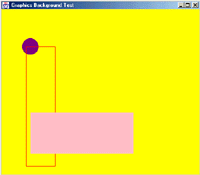

Back to Declarations Forward to Input/Output
Back to Declarations Forward to Input/Output 
| Graphics |
Graphical programs are Fun!
Writing a program with graphics means that it puts shapes and colors on the screen. You could write a program that draws a clown face, or a pattern of colorful rectangles. Or you could write a program that bounces a ball around the screen.
If you put the command fillCircle(50, 70, 40); in a program, it will draw
a circle 50 points (or pixels) away from the left edge of the screen, 70 pixels down from
the top of the screen, and the circle will have a radius of 40 pixels.
If you set the color before you call drawCircle using the command
setColor(purple); it will draw a purple circle.
As you can see from the example, you specify where a shape should go by specifying how far over from the left edge of the screen and how far down from the top edge of the screen it is.
You can also have your program set what the color of its background should be by using the command
setBackgroundColor. If you want to set the background to yellow, put the call
setBackgroundColor(yellow); in your program.
The difference between drawCircle and fillCircle, and between any of the draw and fill
functions, is that draw just paints an outline of the shape while fill fills the whole shape in.
Below is a sample program using what we have learned. Type it into JUDO and compare what pops up
on the screen with what your code says.
void main() {
setBackgroundColor(yellow);
setColor(purple);
fillCircle(50, 70, 40);
setColor(red);
drawRectangle(60, 90, 70, 290);
setColor(pink);
fillRectangle(70, 250, 250, 100);
}
The above program produces this output:

Something you may want to do is add delays to your program. Say in between drawing a couple
of lines or rectangles you want your program to wait for half a second, you can call
the delay(0.5). When you call delay you should use a double value representing
how many seconds you want the program to wait before going on.
You can view the Graphics functions in the JUDO
Functions Reference.
If you need a list of the colors you can use in JUDO, see the JUDO Color Values Reference.
Back to Declarations Forward to Input/Output